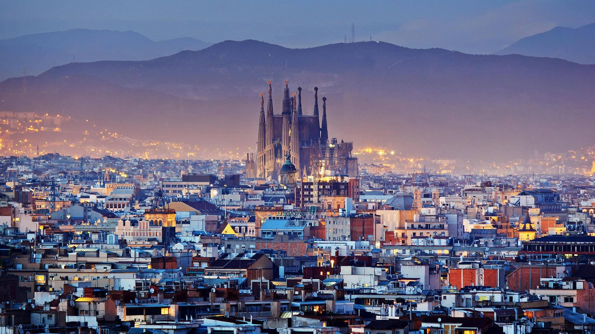
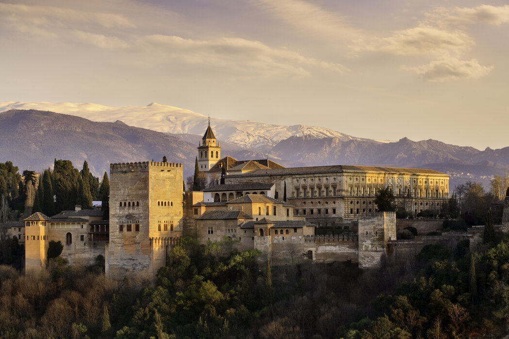
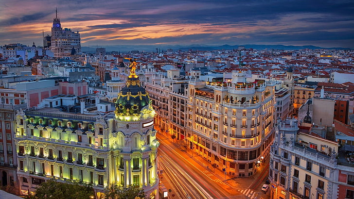

DESPRE SPANIA
Spania este una dintre cele populare destinații turistice din Europa, unde milioane de turiști din lumea întreagă merg anual.
Spania este o țară spectaculoasă din Europa de Sud și una dintre cele mai populare destinații turistice din Europa. De la istorie și artă până la soare, mare și viață de noapte și chiar și mâncare cum nu găsești în multe locuri din lume, Spania oferă experiențe pe toate gusturile. În plus, există nenumărate obiective turistice care merită văzute.
Deci, sunteți gata să le explorați?
1. BARCELONA

Barcelona uimește atât prin istoria autentică și bizară, cât și prin faptul că este unul dintre cele mai impresionante locuri de vizitat în Spania. De la traseele pitorești ale fascinatului Park Guell, până la romanticele alei înguste din Barri Gotic, de la cluburile de noapte de pe plajă, până la zecile de biserici sacre și minuni arhitecturale ale orașului, acest oraș de lângă mare pare să atragă toate tipurile: aventurier, cuplu, petrecăreț, iubitor de cultură – și nu numai. Ați putea sta în Barcelona doar câteva zile, dar, cel mai probabil, ați avea nevoie de o săptămână întreagă pentru a explora.
Barcelona este cu adevărat orașul cosmopolit care atrage toată atenția. O mare parte a activității se învârte în jurul Las Ramblas, o serie de străzi înguste și alei pline de restaurante, cluburi de noapte și o piață pietonală vibrantă. Dar ar trebui să faci și un tur al capodoperelor lui Gaudi precum Casa Mila, Casa Batllo și La Sagrada Familia. De asemenea, nu trebuie să ratați scena eclectică a cumpărăturilor, mâncarea și vinul rafinat din regiune.
2. GRANADA

Situată la baza munților Sierra Nevada din sudul Spaniei, Granada este capitala provinciei cu același nume. Este, de asemenea, unul dintre cele mai frumoase locuri de vizitat în Spania. Un oraș de dimensiuni medii, Granada oferă un amestec perfect de atracții spectaculoase, culturi tradiționale și o viață de noapte animată. Dar, mai ales, este casa Alhambra, un simbol al artei maure care încapsulează istoria andaluză și este una dintre marile obiective arhitecturale ale Europei.
Printre cele mai importante obiective turistice din Granada și din Spania se numără Catedrala din Granada din secolul al XVI-lea, cu tavanul său magnific cu cupolă și faimosul Alhambra, un palat maur grandios cu grădini luxoase și băi arabe.
3. MADRID

Capitala Spaniei și cel mai mare oraș, Madrid, este cunoscut pentru scena vieții de noapte sclipitoare. Orașul constituie o diversitate de grupuri etnice, ceea ce îl face unul dintre cele mai colorate orașe cosmopolite din Europa. Madrid este un oraș ce combină arhitectură veche și nouă. Capitala este compusă din mai multe cartiere care oferă propriul lor caracter unic și atracții, de la cartierele istorice la comunități mai vechi - zone universitare, districte multiculturale și zone de petrecere.
Inima orașului este Puerta del Sol, o piață mare care servește drept scenă pentru festivaluri, adunări importante și artiști de stradă, precum și un centru pentru rețeaua de transport public.
Alte două piațe importante sunt Plaza Mayor, cunoscută pentru numeroasele sale magazine de suveniruri și cafenele, și piața plină de viață San Miguel.
4. SEVILLA

Printre cele mai frumoase orașe și cele mai importante locuri de vizitat în Spania se numără, cu siguranță, Sevilla. Atracțiile turistice excepționale, festivalurile și viața de noapte, fac din Sevilla destinația turistică de top din sudul Spaniei și unul dintre cele mai apreciate locuri de vizitat din Spania. Drept capitală a Andaluziei, Sevilla este și capitala financiară și culturală a regiunii.
Sevilla găzduiește multe repere istorice frumoase și importante, dintre care principalul este marea Catedrală din Sevilla, unde se crede că este îngropat Cristofor Columb.
Alte clădiri semnificative includ Real Alcazar, un palat maur extravagant cu grădini luxoase și o cameră în care a fost planificată călătoria lui Cristofor Columb în Lumea Nouă.
5. VALENCIA
Unul dintre cele mai mari și mai importante orașe din Spania, Valencia este situată în partea de est a țării, în regiunea cu același nume. După câțiva ani de construcție și renovare majoră, Valencia este astăzi renumită pentru Festivalul Fallas și capodopera arhitecturală a Orașului Artelor și Științelor. Valencia reprezintă, așadar, unul dintre cele mai impresionante locuri de vizitat în Spania.
Valencia este plină de clădiri istorice, care includ biserici uimitoare, mănăstiri vechi, cum ar fi San Miguel de los Reyes, și cuprinde, de asemenea, un centru antic al comerțului cu mătase, cunoscut astăzi ca Piața Schimbului de Mătase.
Unul dintre cele mai populare cartiere din Valencia este Barri del Carme, un amestec colorat de arhitectură, diverse grupuri etnice, magazine la modă și cafenele în aer liber.